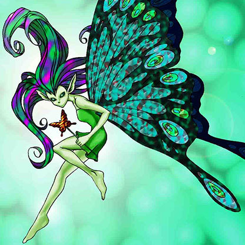

Fairy's Gift

Description: "Gain 800 Life Points when this card is flipped face-up."
STATS
ATK: 1400
DEF: 1000DECK COST
Deck Cost per Card: 29EFFECT IS IMPLEMENTED!
Fusion List (6 Possible Fusions)
- Fairy's Gift + Ancient Jar = Mystical Sand
- Fairy's Gift + Dark Plant = Queen of Autumn Leaves
- Fairy's Gift + Hourglass of Courage = Dark Witch
- Fairy's Gift + Mystical Capture Chain = Dark Witch
- Fairy's Gift + Petit Angel = Dark Witch
- Fairy's Gift + Yashinoki = Queen of Autumn Leaves